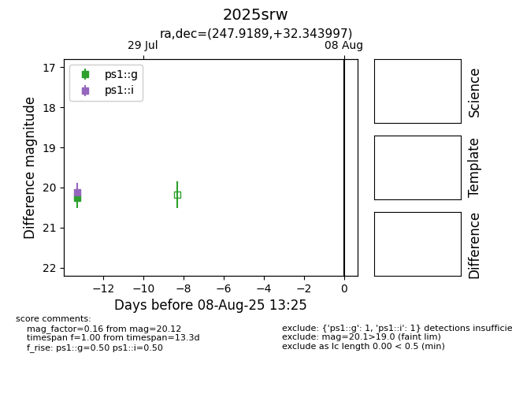

Target 2025srw at 2025-08-08 15:46, see:
TNS: wis-tns.org/object/2025srw
YSE: ziggy.ucolick.org/yse/transient_detail/2025srw
alt names
2025srw (yse,tns)
coordinates:
equatorial (ra, dec) = (247.9189,+32.34400)
galactic (l, b) = (53.1825,+42.42226)
photometry
last ps1::g=20.26, ps1::i=20.12
1 ps1::g, 1 ps1::i detections
